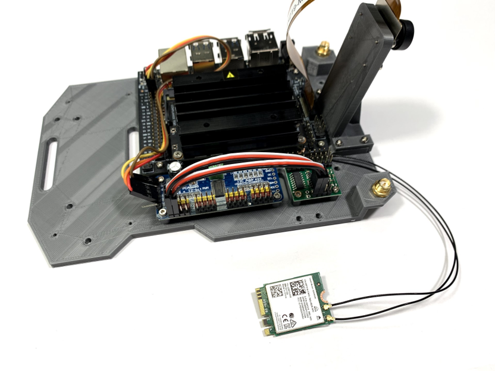
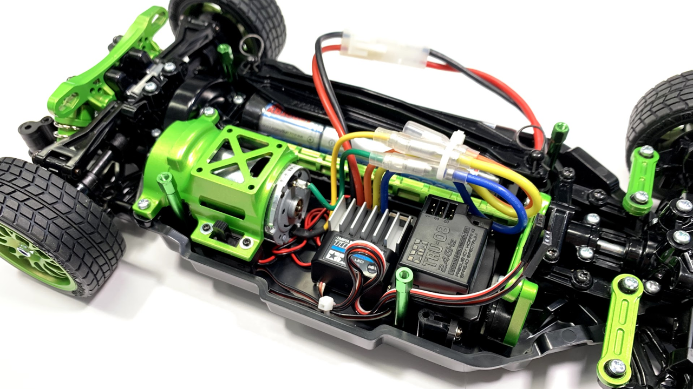

← Projects
Custom JetRacer
An autonomous RC car that drives itself around a track.
A JetRacer platform running on an NVIDIA Jetson, trained to follow a road from its onboard camera. I collected and labeled driving data, trained a convolutional model in PyTorch to predict steering, and deployed it for real-time inference on the car.

